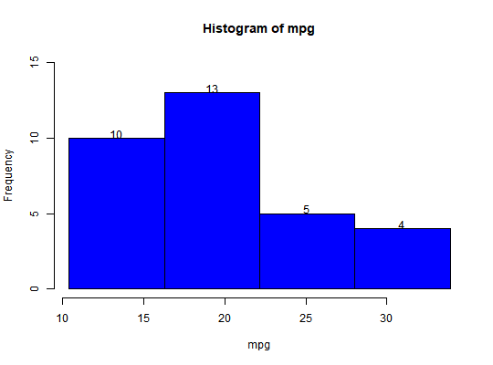

ds_freq_cont returns the frequency distribution of
continuous by splitting the data into equidistant intervals created based on
the number of bins specified. hist.ds_freq_cont creates histogram
for the frequency table created using ds_freq_cont
ds_freq_cont(data, bins = 5) # S3 method for ds_freq_cont hist(x, col = "blue", ...)
ds_freq_contds_freq_cont returns an object of class "ds_freq_cont"
An object of class "ds_freq_cont" is a list containing the
following components
freq_cont() has been deprecated. Instead use ds_freq_cont().
link{ds_freq_table} link{ds_cross_table}
# frequency table ds_freq_cont(mtcars$mpg, 4)#> Variable: mpg #> |---------------------------------------------------------------------------| #> | Bins | Frequency | Cum Frequency | Percent | Cum Percent | #> |---------------------------------------------------------------------------| #> | 10.4 - 16.3 | 10 | 10 | 31.25 | 31.25 | #> |---------------------------------------------------------------------------| #> | 16.3 - 22.1 | 13 | 23 | 40.62 | 71.88 | #> |---------------------------------------------------------------------------| #> | 22.1 - 28 | 5 | 28 | 15.62 | 87.5 | #> |---------------------------------------------------------------------------| #> | 28 - 33.9 | 4 | 32 | 12.5 | 100 | #> |---------------------------------------------------------------------------|# histogram k <- ds_freq_cont(mtcars$mpg, 4) hist(k)